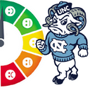

ConnectCarolina RateMyProfessor Integration

Tooltips: OFF
Turning this setting off will prevent detailed requests for comments from being sent when you hover your mouse over a profile.
Enable Feature
Disable Feature